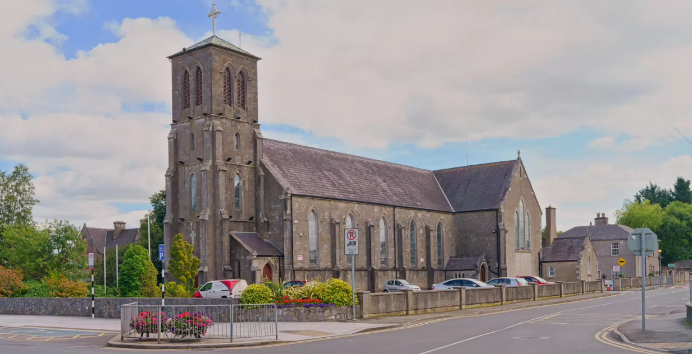
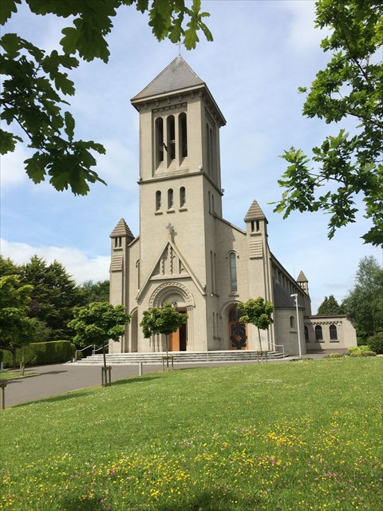
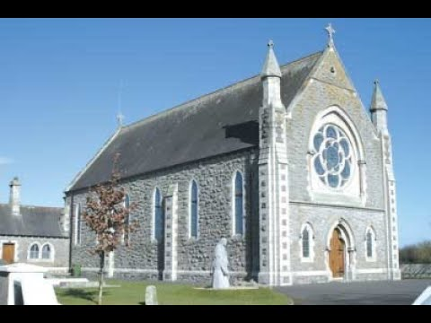
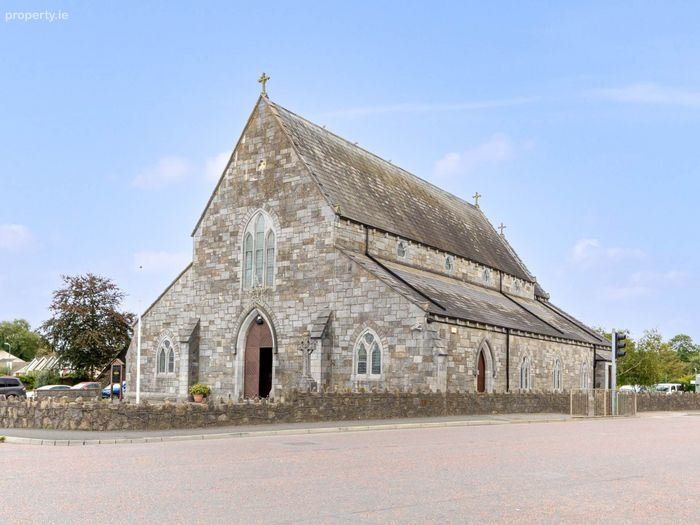
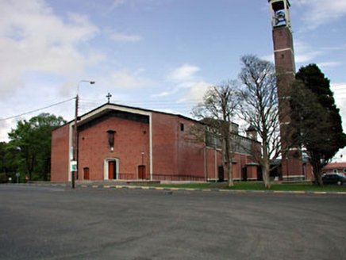

Stay up to date with the latest news, announcements, and community updates from across our six parishes.

This is where the main text of the news update goes. It could be a notice about an upcoming Parish Pastoral Council meeting, a note of thanks for a recent fundraising event, or an update on the church renovations.
You can write a few paragraphs here. To add a photo, simply replace the placeholder image on the left with the actual photo file.

The next baptism preparation course for parents will take place in the Parish Centre. Please contact the parish office to register your interest. We look forward to welcoming you.
A huge thank you to all the volunteers who came out to help clean the church and tidy the grounds last weekend. Your time and effort are greatly appreciated and make a huge difference to our beautiful church.

Preparations are underway for this year's Christmas Fair. We are currently looking for donations of raffle prizes, bottles for the bottle stall, and volunteers to help on the day. Please email the pastoral area address to get involved.

Training for new altar servers will take place this Saturday morning at 10:30 AM. Any young person who has made their First Holy Communion and would like to serve at the altar is very welcome to attend.

Thank you to everyone who attended our recent community coffee morning in the parish hall. It was wonderful to see so many familiar faces and new members of the community coming together for a chat and a cup of tea.
Photos from the morning are now available. Please email the coordinator if you would like a copy of any of the pictures.